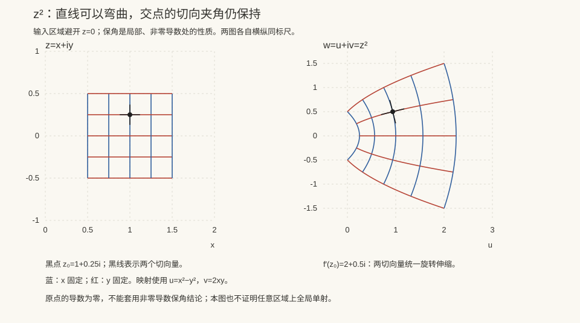

本页目录
复变 I · 解析函数与 Cauchy–Riemann 方程
复变函数论只研究一类函数——解析函数（在开集上处处复可导），但这一个条件的后果好得不像话：自动无穷可导、局部就是幂级数、由边界值定内部值……本页先讲清“开集上的复可导为什么这么强”：答案藏在 Cauchy–Riemann 方程里。
学习层：方向探针先报警，C–R 账本再下结论
1. 先看一根小箭头能不能被同一个复数乘法解释
把复平面当作二维实平面。在点 \(z_0\) 放三根很短的箭头：沿 \(1\)、沿 \(i\)、沿 \(1+i\)。若 \(f\) 在 \(z_0\) 复可导，那么这三根箭头的首阶变化都必须是同一个复数乘法：
这比“每个方向各自有一个斜率”苛刻得多。\(z^2\) 会把小箭头统一旋转、伸缩；\(\bar z\) 会把它们翻过实轴；\(|z|^2\) 在原点的一阶变化全部消失，却在离开原点后不再由一个复数乘法统一解释。实验把这三个几何直觉和一个参数族放进同一张账本。
2. 精确桥梁：实 Jacobian、C–R 残差与方向商
写 \(f=u+iv\)。以下等价关系以 \(u,v\) 在 \(z_0=x_0+iy_0\) 实 Fréchet 可微为前提，其实 Jacobian 为
复导数存在，当且仅当这个实线性映射是“乘以某个复数”的矩阵：
为了逐项核对，记 C–R 残差
对任意非零方向 \(w=a+ib\)，实微分给出方向导数 \(Df(z_0)[w]\)；方向商
只有在所有方向一致时才是复导数。有限个 \(Q_w\) 是诊断探针，不是邻域解析性的证明。
四个对象的精确账本是：
| 函数 | \(u,v\) | \((r_1,r_2)\) | 复可导性 | 邻域解析性 |
|---|---|---|---|---|
| \(z^2\) | \(x^2-y^2, 2xy\) | \((0,0)\) 处处 | 处处，\(f'=2z\) | 是 |
| \(\bar z\) | \(x, -y\) | \((2,0)\) 处处 | 处处否 | 否 |
| \(\lvert z\rvert^2\) | \(x^2+y^2, 0\) | \((2x,2y)\) | 仅 \(z=0\)，导数为 \(0\) | 否 |
| \(p_\lambda(z)=z^2+\lambda\lvert z\rvert^2\) | \((1+\lambda)x^2+(\lambda-1)y^2, 2xy\) | \((2\lambda x,2\lambda y)\) | \(z=0\)；若 \(\lambda=0\) 则处处 | 仅 \(\lambda=0\) |
这里的“仅 \(z=0\)”是在一个点复可导，不是“在原点解析”。\(p_\lambda\) 是 \(z,\bar z\) 的参数化实多项式；解析要求某个开邻域中的每一点都复可导。由于这些对象的 \(u,v\) 都处处实可微，C–R 在这里确实是充分必要条件；一般只知道偏导数存在并满足 C–R，并不足以推出复可导。
3. 预测门：先给结论，再打开方向与邻域两本账
实验默认在 \(z_0=1+i\)、\(\lambda=1/2\)。先预测：
- 四个对象中，哪些在这个点满足 C–R？
- 把点移到 \(z_0=0\) 后，\(|z|^2\) 和 \(p_{1/2}\) 的复导数是否存在？它们是否因此解析？
- 若 \(Q_1,Q_i,Q_{1+i}\) 三个方向商刚好相同，是否已经证明函数在邻域解析？
- 看到所有 \(u,v\) 都是实多项式，能否直接把“实可微”叫作“复解析”？
提交前不显示 Jacobian、C–R 残差、方向商、导数和 SVG。改变函数、点或参数会重新锁门。
4. 动手实验：一张可复算的方向诊断表
揭示后可在原点、一般点和坐标轴点之间切换，并调节 \(\lambda\)。表中逐行列出四个函数的 \(u_x-v_y\)、\(u_y+v_x\)、三个有限方向商、点复导数和邻域分类；SVG 把方向商画在一个复系数平面中。它展示的是有限诊断，结论仍由精确 C–R 公式和量词决定。
无 JavaScript 时的静态读法：默认取 \(z_0=1+i\)、\(\lambda=1/2\)，方向探针为 \(1,i,1+i\)。
| 函数 | \((r_1,r_2)\) | \(Q_1\) | \(Q_i\) | \(Q_{1+i}\) | 点复导数 | 邻域结论 |
|---|---|---|---|---|---|---|
| \(z^2\) | \((0,0)\) | \(2+2i\) | \(2+2i\) | \(2+2i\) | \(2+2i\) | 解析 |
| \(\bar z\) | \((2,0)\) | \(1\) | \(-1\) | \(-i\) | 不存在 | 非解析 |
| \(\lvert z\rvert^2\) | \((2,2)\) | \(2\) | \(-2i\) | \(2-2i\) | 不存在 | 非解析 |
| \(p_{1/2}(z)\) | \((1,1)\) | \(3+2i\) | \(2+i\) | \(3+i\) | 不存在 | 非解析 |
把点改为 \(z_0=0\) 时，\(z^2\)、\(|z|^2\) 和 \(p_{1/2}\) 的 C–R 残差都为 \((0,0)\)，三者都有点复导数 \(0\)；但后两者仍没有解析邻域。有限方向一致只能说明“在这些探针上没有发现冲突”，不能证明一个开邻域中的全称命题。
5. 边界：三种“可导”不能互换
- 实可微只说 \(J_f\) 存在；\(\bar z\) 和 \(|z|^2\) 都满足这一点。
- 在一点复可导要求 C–R 在该点成立（在本实验的多项式模型中，实可微前提自动满足）。\(|z|^2\) 在原点是标准反例：\(f(h)/h=\bar h\to0\)，但离开原点 C–R 立即失败。
- 解析要求在开集内处处复可导。不能用有限采样点、有限方向或一条轨迹替代邻域量词。
因此“探针通过”是调试信号，不是定理证明；要把结论升级为解析性，必须回到账本中的函数公式和邻域条件。

1. 复可导：一个苛刻得多的条件
定义 \(f: \mathbb{C} \to \mathbb{C}\) 在 \(z_0\) 可导：\(f'(z_0) = \lim_{\Delta z \to 0}\frac{f(z_0 + \Delta z) - f(z_0)}{\Delta z}\)。形式与实函数一样，杀伤力在极限过程：\(\Delta z\) 可以沿复平面任何方向趋零，所有方向必须给出同一个极限——二维的自由度全被锁死（对比数分 V：多元实函数各偏导存在远不足以可微；复可导比"可微"还强得多）。在区域内处处可导称解析（全纯）。
定理（Cauchy–Riemann 方程） \(f = u(x,y) + iv(x,y)\) 在一点可导 \(\iff\) \(u, v\) 可微且
推导（两行，必会）：沿实轴 \(\Delta z = \Delta x\) 求极限得 \(f' = u_x + iv_x\)；沿虚轴 \(\Delta z = i\Delta y\) 得 \(f' = v_y - iu_y\)；两者相等，实虚部各自对齐即 C–R。\(\blacksquare\)
几何读法：C–R ⟺ Jacobi 矩阵形如 \(\begin{pmatrix} a & -b \\ b & a\end{pmatrix}\) = 旋转 × 伸缩——解析映射在导数非零处保角（保持曲线夹角，共形映射的出身；这类"旋转伸缩"矩阵正是复数乘法的矩阵表示，高代呼应）。
名反例：\(f(z) = \bar z\)（处处不可导——C–R 给 \(1 = -1\)）；\(|z|^2\) 只在原点可导。含 \(\bar z\) 的表达式基本无缘解析——解析函数是"纯 \(z\) 的函数"。
2. 调和函数：解析的实部与虚部
解析函数的 \(u, v\) 都满足 Laplace 方程 \(u_{xx} + u_{yy} = 0\)（对 C–R 交叉求导即得）——称调和函数。反之，单连通域上任一调和 \(u\) 都可配出共轭调和 \(v\) 使 \(u + iv\) 解析（用 C–R 积分出 \(v\)，例 2 演示）。
🔗 这是复变与物理/PDE 的接口：平面静电场、稳态温度场、理想流体的势都调和——解析函数论 = 平面位势理论的语言（PDE 页 Laplace 方程再会）。
3. 初等函数：熟脸的复身份
指数 \(e^z = e^x(\cos y + i\sin y)\)（Euler 公式为定义之本）：处处解析，\((e^z)' = e^z\)，但以 \(2\pi i\) 为周期——实函数没有的新性格，也是对数多值的根源。
三角 \(\cos z = \frac{e^{iz} + e^{-iz}}{2}\)：复平面上 \(|\cos z|\) 无界（\(\cos(iy) = \cosh y \to \infty\)）——"有界性"是实轴的错觉。
对数（多值性的大本营）：\(\mathrm{Ln}\, z = \ln|z| + i(\arg z + 2k\pi)\)——无穷多值，相邻枝差 \(2\pi i\)。取主辐角 \(\arg z \in (-\pi, \pi]\) 得主值 \(\ln z\)，在割破负实轴的平面上解析。幂 \(z^a = e^{a\,\mathrm{Ln}z}\) 一般多值（\(i^i = e^{-\pi/2 - 2k\pi}\)——全是实数，复变第一惊奇）。
多值处理的纪律：算之前先选定单值分支（割线 + 主值），跨越割线必换枝——留数计算实积分时（复变 III）这是主要坑源。
4. 典型例题
例 1（C–R 判可导） \(f(z) = x^2 + iy^2\)：C–R 要求 \(2x = 2y\) 且 \(0 = 0\)——仅在直线 \(y = x\) 上可导，无处解析（解析需要邻域）。"可导点集"与"解析区域"的区别一题看清。
例 2（共轭调和全流程） \(u = x^2 - y^2 + x\)，求 \(v\) 使 \(f = u + iv\) 解析。 解：\(v_y = u_x = 2x + 1 \Rightarrow v = 2xy + y + \varphi(x)\)；再 \(v_x = 2y + \varphi' = -u_y = 2y \Rightarrow \varphi' = 0\)。故 \(v = 2xy + y + C\)，且 \(f = z^2 + z + iC\)（拼回 \(z\) 的表达式验明正身）。
例 3（多值实算） 解方程 \(e^z = -1\)：\(z = \mathrm{Ln}(-1) = i(\pi + 2k\pi)\)——实数世界"无解"的方程在复平面有一列解；\(e^{i\pi} = -1\) 是 \(k = 0\) 枝。\(\blacksquare\)
下一页：复积分——Cauchy 两大定理把"解析"的全部魔力兑现：无穷可导、Liouville、代数基本定理，一页收割。